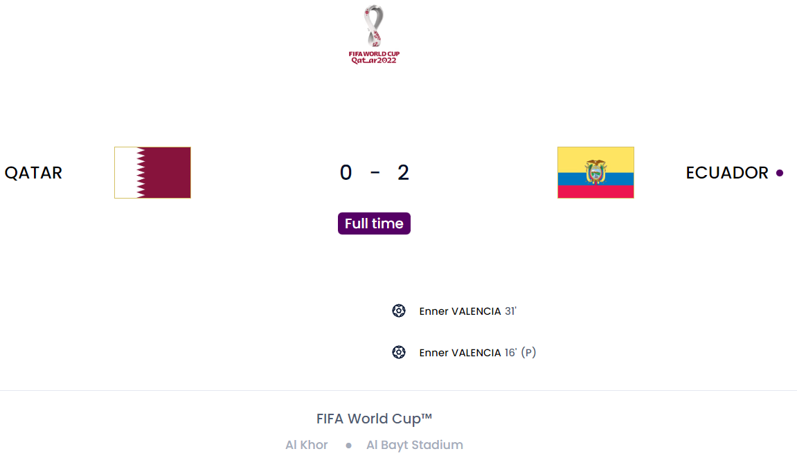
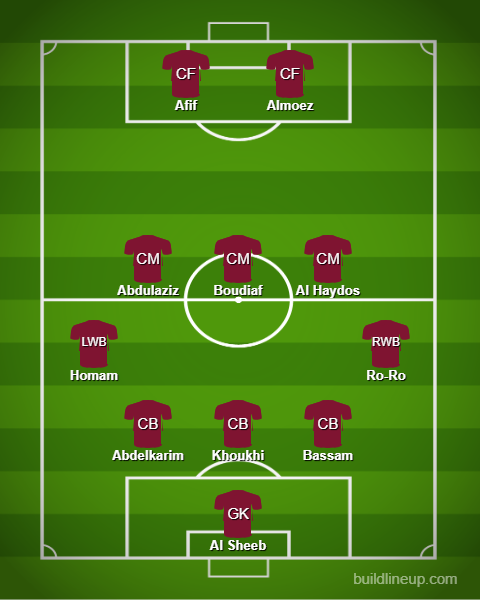
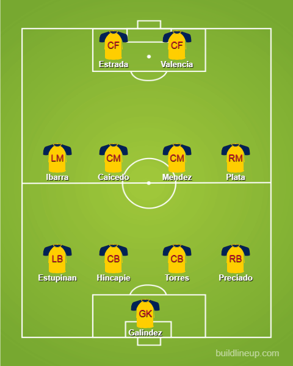

Day 1
Qatar V Ecuador

Definitely the worst opening match in the history of the whole tournament. I can’t believe I really thought Qatar could give a match against Ecuador. This is also the first time ever in the history of the World Cup that the host nation has lost its first match. Even Russia had a better game than this lot. Ecuador hardly broke a sweat in this game. The second half was really just chilling from them. Qatar was happy to give them the possession in the opening stages and Valencia scored the opener after around 3 minutes but it was ruled out by VAR for offside(Highly Highly controversial but was reasoned out by the fact half his leg..was..in an offside position. God these rules seem dumb). However, it would be justice served when the goalie pulled down Valencia clean through on goal for a clear penalty which was put away perfectly. The second goal was brilliantly crafted though. A really great cross from Preciado to the head of Valencia and a good header. Qatar’s best chance was probably with the last play in the first half when they managed to somehow get an unmarked header and he completely fluffed it. That probably would have made the second half more interesting but they weren’t good enough to do that so it became a very dull second half. Given the fact they have Senegal(Even without Mane they are still decent enough) and the Netherlands, I don’t have many hopes for them honestly.
Qatar:

Ecuador:
